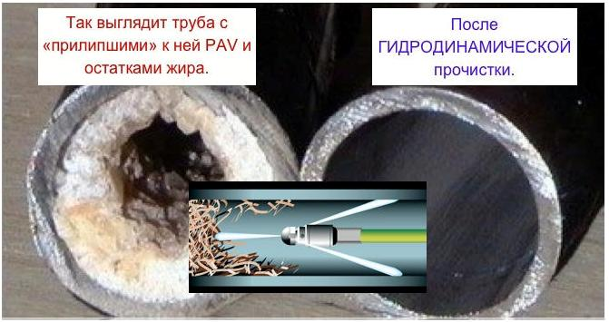

|  |
Наша компания использует следующие современные технологии устранения засоров:Гидродинамическая прочистка наружной канализации. Она позволяет эффективно разрушить отложения тонкими струями воды, подаваемой в систему под большим давлением. Одновременно она выводит все загрязнения наружу, что позволяет быстро устранить засор и его причину. Механическая прочистка засоров канализации. Это более дешевый, но также весьма эффективный способ, позволяющий удалить отложения посредством тросов с различными насадками. Использовать его следует осторожно, чтобы не повредить трубу. |